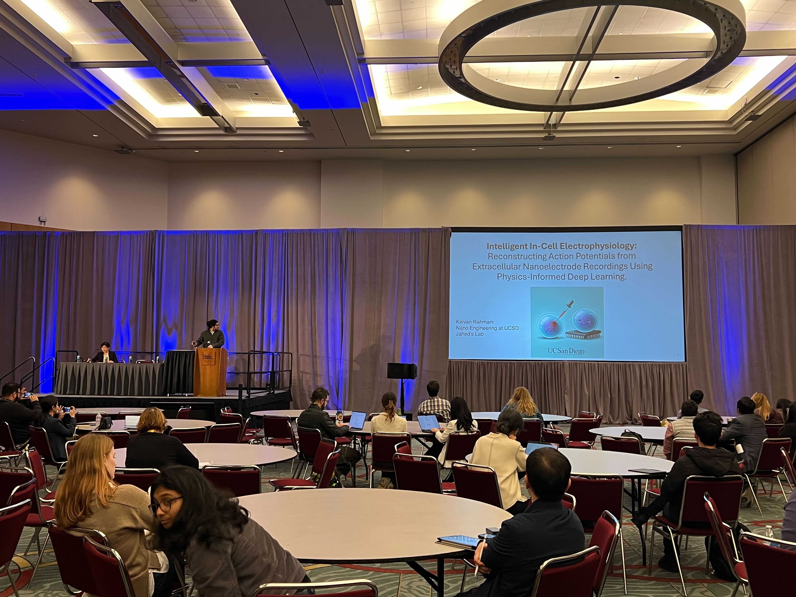

News Coverage
-
January 14, 2025
Our paper "Intelligent in-cell electrophysiology: Reconstructing intracellular action potentials using a physics-informed deep learning model trained on nanoelectrode array recordings" is published in Nature Communications.
Featured in: EurekAlert!, Mirage News, Newswise, ScienMag, Bioengineer.org, The Medical News, Germanic.News, Health Tech World, news-medical.net (See article metrics)
-
December 16, 2024I gave a talk titled "Intelligent sensing of electrical communication in cells using AI and Nanotechnology" at Cell Bio 2024 (ASCB/EMBO joint meeting) in San Diego, CA. 
-
Week of December 5, 2024My poster was nominated for the Best Poster Award at the MRS 2024 Fall Meeting & Exhibit in Boston, MA.